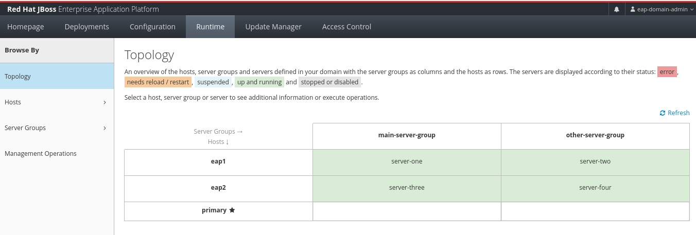
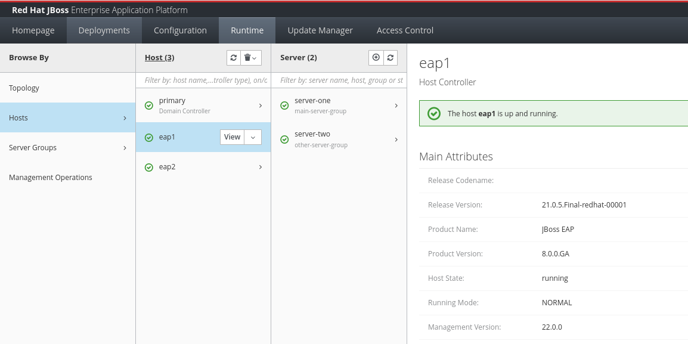
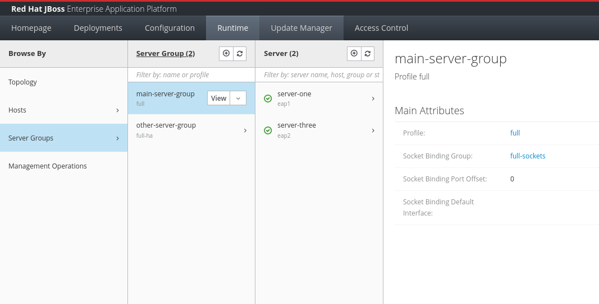
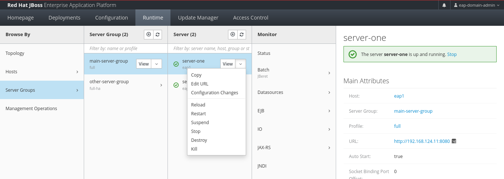
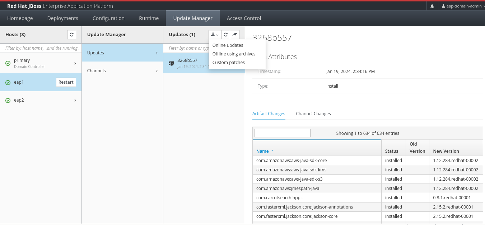

JBoss EAP Domain Mode Configuration
A JBoss EAP Managed Domain allows you to configure and manage multiple instances of JBoss EAP server from a central point of control.
The diagram below illustrates the components of a JBoss EAP managed domain.
Terminology and Concepts
It is important to understand the terminology and concepts in a managed domain before creating it.
- Managed Domain
-
A collection of JBoss EAP instances managed from a central point of control.
- Host
-
A physical or virtual machine that can run JVM processes.
- Host Controller
-
A JVM process that runs on each host server that relays configuration information, runtime status, and management commands to JBoss EAP server instances on that particular machine. Host controllers communicate with the Domain Controller and ensures that JBoss EAP server instances are configured as per the policies for a particular domain.
- Domain Controller
-
The central point from which the domain is controlled. It ensures that each JBoss EAP server is configured according to certain policies. The domain controller is a special type of host controller (It is also called the Primary Host Controller) that typically does not run JBoss EAP server instances. Instead it runs a small JVM process that communicates with host controllers and manages the configuration policies for the domain.
- Server Group
-
A collection of JBoss EAP servers that are managed as a single unit.
- Server
-
A JBoss EAP server instance running in its own JVM process. Jakarta EE applications run on servers. In a managed domain, servers are not managed individually, but as part of a Server Group.
In the diagram shown above:
-
There are
4hosts (Host 1, Host 2, Host 3, andHost 4) -
There are
4host controllers (1primary host controller, and 3secondary host controllers) -
There are
4JBoss EAP server instances (EAP Server 1-4) -
There are
2Server Groups (Server Group AandServer Group B).Server Group Aconsists ofEAP servers 1 and 2,Server Group BcontainsEAP servers 3 and 4.
Exercise: Configuring a Managed Domain of JBoss EAP Servers
| For configuring JBoss EAP in Domain mode, we recommend you work with a separate installation of JBoss EAP in a different folder from where you configured and ran the hands-on exercise for the default standalone mode EAP instance. The simplest way to do this is to download the zip archive installation of JBoss EAP, which comes with a fully pre-configured JBoss EAP instance. Simply unarchive the zip file in a folder of your choice other than /opt, and then follow the instructions in this chapter. |
In this exercise, you will set up a JBoss EAP Managed Domain consisting of three servers. One server (controller.example.com) will be configured as the Domain Controller. The other two servers (eap1.example.com and eap2.example.com) will be configured to act as Host Controllers and will host the actual JBoss EAP server instances split into Server Groups.
Pre-requisites
-
You will need three (3) servers or VMs with JBoss EAP 8.0 installed on them. Your IP addresses maybe different. Replace the values according to your set up.
Host
IP Address
Role
controller.example.com192.168.124.10Domain Controllereap1.example.com192.168.124.11Host Controllereap2.example.com192.168.124.12Host Controller -
Install JBoss EAP 8.0 on all three servers. We recommend using the zip file installation method and installing it in a separate directory to prevent overwriting the configuration of the standalone instance that you have used in previous exercises. For all three VMs, create a user named
jbossthat will run the JBoss EAP instance.
Steps
| Although Red Hat does not recommend editing XML configuration files directly, there are scenarios where it is useful. In this case, to gain an understanding of how a managed domain is configured and the various XML files that are involved. Once the managed domain is set up, you can use either the EAP web console, or the EAP CLI to manage the domain configuration. |
-
Log in to the VM that you will configure as the
Domain Controller(controller). Log in as thejbossuser to run the JBoss EAP instance. -
Create the domain administrator management account (
eap-domain-admin) using theadd-user.shscript in the `$EAP_HOME/bin`folder.$ ./add-user.sh -m -u eap-domain-admin -p redhat123 -
Inspect the default
EAP_HOME/domain/configuration/domain.xmlfile. There are 2Server Groupsdefined in the domain (main-server-groupandother-server-group).<server-groups> <server-group name="main-server-group" profile="full"> <jvm name="default"> <heap size="1000m" max-size="1000m"/> </jvm> <socket-binding-group ref="full-sockets"/> </server-group> <server-group name="other-server-group" profile="full-ha"> <jvm name="default"> <heap size="1000m" max-size="1000m"/> </jvm> <socket-binding-group ref="full-ha-sockets"/> </server-group> </server-groups> -
Inspect the default
EAP_HOME/domain/configuration/host-primary.xmlfile. This file configures the host as the primary controller (Domain Controller). There are no server definitions in this file. You will configure theeap1andeap2VMs as host controllers and configure them to point to the domain controller in the next steps. The actual JBoss EAP server instances hosting applications will run on theeap1andeap2VMs.<domain-controller> <local/> </domain-controller> -
Start the domain controller on the
controllerVM.$ cd $EAP_HOME/bin $ ./domain.sh --host-config=host-primary.xml -b 192.168.124.10 -bmanagement 192.168.124.10 ========================================== JBoss Bootstrap Environment JBOSS_HOME: /home/jboss/jboss-eap-8.0 JAVA: java JAVA_OPTS: -Xms64m -Xmx512m... =========================================== ... 18:41:56,427 INFO [org.jboss.as.process.Host Controller.status] (main) WFLYPC0018: Starting process 'Host Controller' ... [Host Controller] 18:41:58,660 INFO [org.jboss.as] (MSC service thread 1-2) WFLYSRV0049: JBoss EAP 8.0.0.GA (WildFly Core 21.0.5.Final-redhat-00001) starting ... management interface listening on http://192.168.124.10:9990/management [Host Controller] 18:42:05,421 INFO [org.jboss.as] (Controller Boot Thread) WFLYSRV0053: Admin console listening on http://192.168.124.10:9990 and https://192.168.124.10:-1 [Host Controller] 18:42:05,522 INFO [org.jboss.as] (Controller Boot Thread) WFLYSRV0025: JBoss EAP 8.0.0.GA (WildFly Core 21.0.5.Final-redhat-00001) (Host Controller) started in 8951ms - Started 71 of 71 services (14 services are lazy, passive or on-demand) - Host Controller configuration files in use: domain.xml, host-primary.xmlSince the secondary host controllers need to communicate with the domain controller to fetch configuration information, you need to start the primary controller to bind to the IP address of the
controllerVM rather than thelocalhost.If you do not pass a --host-configargument to thedomain.shscript, it will read theEAP_HOME/domain/configuration/host.xmlconfiguration file by default. Similarly, if you do not pass a-bflag with a valid IP address for the VM, it will start and bind tolocalhost. -
Log in to the
eap1VM as thejbossuser. Inspect theEAP_HOME/domain/configuration/host-secondary.xmlfile. Notice that there are two servers declared.server-onebelongs to themain-server-group, andserver-twobelongs to theother-server-group.<servers> <server name="server-one" group="main-server-group"/> <server name="server-two" group="other-server-group"> <socket-bindings port-offset="150"/> </server> </servers>server-twoneeds to run on a different port to avoid port clashes. In the default configuration, it runs on an offset of150. Soserver-onewill run on port8080(the base port), whileserver-twowill run on port8230(8080+150). -
Before you start the host controller process on
eap1, you need to configure a couple of items to ensure that the host controller oneap1can communicate with the domain controller running on thecontrollerVM. First, add the followingauthentication-clientelement in thehost-secondary.xmlfile oneap1. Add this block after the subsystem xmlns="urn:wildfly:elytron:18.0" and before the <providers> element.... <subsystem xmlns="urn:jboss:domain:core-management:1.0"/> <subsystem xmlns="urn:wildfly:elytron:18.0" final-providers="combined-providers" disallowed-providers="OracleUcrypto"> <authentication-client> <authentication-configuration name="eap1-hc-auth" authentication-name="eap-domain-admin" realm="ManagementRealm" sasl-mechanism-selector="DIGEST-MD5"> <credential-reference clear-text="redhat123"/> </authentication-configuration> <authentication-context name="eap1-hc-auth-context"> <match-rule authentication-configuration="eap1-hc-auth"/> </authentication-context> </authentication-client> ...This XML snippet configured an authentication context for the host controller on
eap1to communicate with the domain controller using the management usereap-domain-adminyou created earlier on thecontrollerVM. Ensure the that theauthentication-nameandclear-textvalues match the username and password of the management user. -
Reference the
authentication-contextin thedomain-controllerelement. Notice that, where you addedlocalto the domain controller configuration on thecontrollerVM, oneap1you add aremoteelement and refer to the authentication context you created earlier. Observe the placeholder variables in thestatic-discoveryelement for thehost,protocol, andport. You will pass the IP address of the domain controller as command line flags to thedomain.shscript.<domain-controller> <remote authentication-context="eap1-hc-auth-context"> <discovery-options> <static-discovery name="primary" protocol="${jboss.domain.primary.protocol:remote+http}" host="${jboss.domain.primary.address}" port="${jboss.domain.primary.port:9990}"/> </discovery-options> </remote> </domain-controller> -
On RHEL 9 VMs, for security reasons, only a limited number of ports are opened for access from external users. You need to open port
9990on thecontrollerVM to allow the host controllers to connect. First, verify that port 9990 is not open as therootuser.[root@controller ~]# firewall-cmd --list-all public (active) ... interfaces: enp1s0 sources: services: cockpit dhcpv6-client ssh ports: protocols: ... -
Open the
TCPport9990as therootuser.[root@controller ~]# firewall-cmd --permanent --add-port=9990/tcp success [root@controller ~]# firewall-cmd --reload success -
Verify that port 9990 is open.
[root@controller ~]# firewall-cmd --list-all public (active) ... interfaces: enp1s0 sources: services: cockpit dhcpv6-client ssh ports: 9990/tcp protocols: ...Failure to configure the firewall properly will result in failures during host controller start up. -
You can now start the host controller on
eap1as thejbossuser.[jboss@eap1 bin]$ ./domain.sh --host-config=host-secondary.xml -Djboss.host.name=eap1 -Djboss.domain.primary.address=192.168.124.10 -b 192.168.124.11 -bmanagement 192.168.124.11 ... [Host Controller] 19:41:42,928 INFO [org.jboss.as.host.controller] (Controller Boot Thread) WFLYHC0148: Connected to the domain controller at remote+http://192.168.124.10:9990 [Host Controller] 19:41:43,081 INFO [org.jboss.as.host.controller] (Controller Boot Thread) WFLYHC0023: Starting server server-one 19:41:43,406 INFO [org.jboss.as.process.Server:server-one.status] (ProcessController-threads - 4) WFLYPC0018: Starting process 'Server:server-one' ... 19:41:47,408 INFO [org.jboss.as.process.Server:server-two.status] (ProcessController-threads - 4) WFLYPC0018: Starting process 'Server:server-two' [Host Controller] 19:41:54,498 INFO [org.jboss.as.host.controller] (management task-1) WFLYHC0021: Server [Server:server-two] connected using connection [Channel ID 65dd20f9 (inbound) of Remoting connection 45170f14 to eap1.example.com/192.168.124.11:36742 of endpoint "eap1:MANAGEMENT" <39d6674b>] [Host Controller] 19:41:54,597 INFO [org.jboss.as.host.controller] (server-registration-threads - 1) WFLYHC0020: Registering server server-two ... [Host Controller] 19:41:54,638 INFO [org.jboss.as] (Controller Boot Thread) WFLYSRV0025: JBoss EAP 8.0.0.GA (WildFly Core 21.0.5.Final-redhat-00001) (Host Controller) started in 19245ms - Started 71 of 72 services (15 services are lazy, passive or on-demand) - Host Controller configuration file in use: host-secondary.xmlPass the IP address of the controllerVM to-Djboss.domain.primary.addressflag. Pass the IP address of theeap1VM to the-band-bmanagementflags. You must also pass a unique host name to the-Djboss.host.nameflag.If the firewall on the controllerVM is not configured correctly, or if there is a network connectivity issue between the domain controller and host controller, you will see errors like the following: [Host Controller] Caused by: java.net.ConnectException: WFLYPRT0053: Could not connect to remote+http://192.168.124.10:9990. The connection failed … [Host Controller] Caused by: java.net.NoRouteToHostException: No route to host -
Switch to the terminal window on the
controllerVM and confirm you see the following, indicating that the domain controller has registered the host controller oneap1successfully:... WFLYHC0019: Registered remote secondary host "eap1", JBoss JBoss EAP 8.0.0.GA (WildFly 21.0.5.Final-redhat-00001) -
Log in to the
eap2VM as thejbossuser. Inspect the EAP_HOME/domain/configuration/host-secondary.xml file. Edit theserverssection, and rename the existing server configuration under it as per the following:<servers> <server name="server-three" group="main-server-group"/> <server name="server-four" group="other-server-group"> <socket-bindings port-offset="150"/> </server> </servers>server-threebelongs to themain-server-group, andserver-twobelongs to theother-server-group. Similar to the configuration oneap1,server-fourruns with a port offset of 150. -
Add the following
authentication-clientelement in thehost-secondary.xmlfile oneap2.... <subsystem xmlns="urn:jboss:domain:core-management:1.0"/> <subsystem xmlns="urn:wildfly:elytron:18.0" final-providers="combined-providers" disallowed-providers="OracleUcrypto"> <authentication-client> <authentication-configuration name="eap2-hc-auth" authentication-name="eap-domain-admin" realm="ManagementRealm" sasl-mechanism-selector="DIGEST-MD5"> <credential-reference clear-text="redhat123"/> </authentication-configuration> <authentication-context name="eap2-hc-auth-context"> <match-rule authentication-configuration="eap2-hc-auth"/> </authentication-context> </authentication-client> ...This XML snippet configured an authentication context for the host controller on
eap2to communicate with the domain controller using the management usereap-domain-adminyou created earlier on thecontrollerVM. Ensure the that theauthentication-nameandclear-textvalues match the username and password of the management user. -
Reference the
authentication-contextin thedomain-controllerelement.<domain-controller> <remote authentication-context="eap2-hc-auth-context"> <discovery-options> <static-discovery name="primary" protocol="${jboss.domain.primary.protocol:remote+http}" host="${jboss.domain.primary.address}" port="${jboss.domain.primary.port:9990}"/> </discovery-options> </remote> </domain-controller> -
Start the host controller on
eap2as thejbossuser.[jboss@eap2 bin]$ ./domain.sh --host-config=host-secondary.xml -Djboss.host.name=eap2 -Djboss.domain.primary.address=192.168.124.10 -b 192.168.124.12 -bmanagement 192.168.124.12 ... 08:55:12,128 INFO [org.jboss.as.process.Host Controller.status] (main) WFLYPC0018: Starting process 'Host Controller' [Host Controller] 08:55:13,429 INFO [org.jboss.as] (MSC service thread 1-2) WFLYSRV0049: JBoss EAP 8.0.0.GA (WildFly Core 21.0.5.Final-redhat-00001) starting ... [Host Controller] 08:55:19,640 INFO [org.jboss.as.host.controller] (Controller Boot Thread) WFLYHC0148: Connected to the domain controller at remote+http://192.168.124.10:9990 [Host Controller] 08:55:19,795 INFO [org.jboss.as.host.controller] (Controller Boot Thread) WFLYHC0023: Starting server server-three 08:55:20,117 INFO [org.jboss.as.process.Server:server-three.status] (ProcessController-threads - 3) WFLYPC0018: Starting process 'Server:server-three' ... 08:55:23,968 INFO [org.jboss.as.process.Server:server-four.status] (ProcessController-threads - 3) WFLYPC0018: Starting process 'Server:server-four' ... [Host Controller] 08:55:30,618 INFO [org.jboss.as] (Controller Boot Thread) WFLYSRV0062: Http management interface listening on http://192.168.124.12:9990/management and https://192.168.124.12:-1/management ... [Host Controller] 08:55:30,625 INFO [org.jboss.as] (Controller Boot Thread) WFLYSRV0025: JBoss EAP 8.0.0.GA (WildFly Core 21.0.5.Final-redhat-00001) (Host Controller) started in 18373ms - Started 71 of 72 services (15 services are lazy, passive or on-demand) - Host Controller configuration file in use: host-secondary.xmlPass the IP address of the controllerVM to-Djboss.domain.primary.addressflag. Pass the IP address of theeap2VM to the-band-bmanagementflags. You must also pass a unique host name to the-Djboss.host.nameflag. -
Observe the terminal windows where you started the domain controller on
controllerVM and verify that the host controller oneap2has been registered.... [Host Controller] 08:35:34,792 INFO [org.jboss.as] (Controller Boot Thread) WFLYSRV0025: JBoss EAP 8.0.0.GA (WildFly Core 21.0.5.Final-redhat-00001) (Host Controller) started in 9543ms - Started 71 of 71 services (14 services are lazy, passive or on-demand) - Host Controller configuration files in use: domain.xml, host-primary.xml [Host Controller] 08:41:09,523 INFO [org.jboss.as.domain.controller] (Host Controller Service Threads - 22) WFLYHC0019: Registered remote secondary host "eap1", JBoss JBoss EAP 8.0.0.GA (WildFly 21.0.5.Final-redhat-00001) [Host Controller] 08:55:19,633 INFO [org.jboss.as.domain.controller] (Host Controller Service Threads - 22) WFLYHC0019: Registered remote secondary host "eap2", JBoss JBoss EAP 8.0.0.GA (WildFly 21.0.5.Final-redhat-00001) -
Your managed domain is configured and started. Login to web console to view and manage the domain configuration. Navigate to http://<controller_ip_address>:9990 and log in as the
eap-domain-adminuser with passwordredhat123. -
Click on
Runtime > Topologyto see the topology of your managed domain.Figure 2. Managed Domain Topology -
Click on
Hostsin theBrowse Bycolumn to view the hosts and the servers running on them.Figure 3. Hosts View -
Similarly, click on
Server Groupsto view the server groups and the servers that are part of them.Figure 4. Server Groups View -
You can click on any of the servers in the
Server Groupsview, and manage their lifecycle (start, stop, restart).Figure 5. Manage Server Lifecycle -
(Optional step) You can also update and apply patches to the JBoss EAP servers running on the hosts. In the top navigation bar of the EAP web console, click on
Update Manager > eap1 > Updates. Click on theInstallation update methodsdrop-down and selectOnline updatesto check if any updates are available. If updates are available, apply them and the server instances will be restarted after the update.Figure 6. Update Manager in Domain Mode
You have successfully set up an EAP managed domain. In the next section, you will learn how to deploy applications to the server groups in a managed domain.